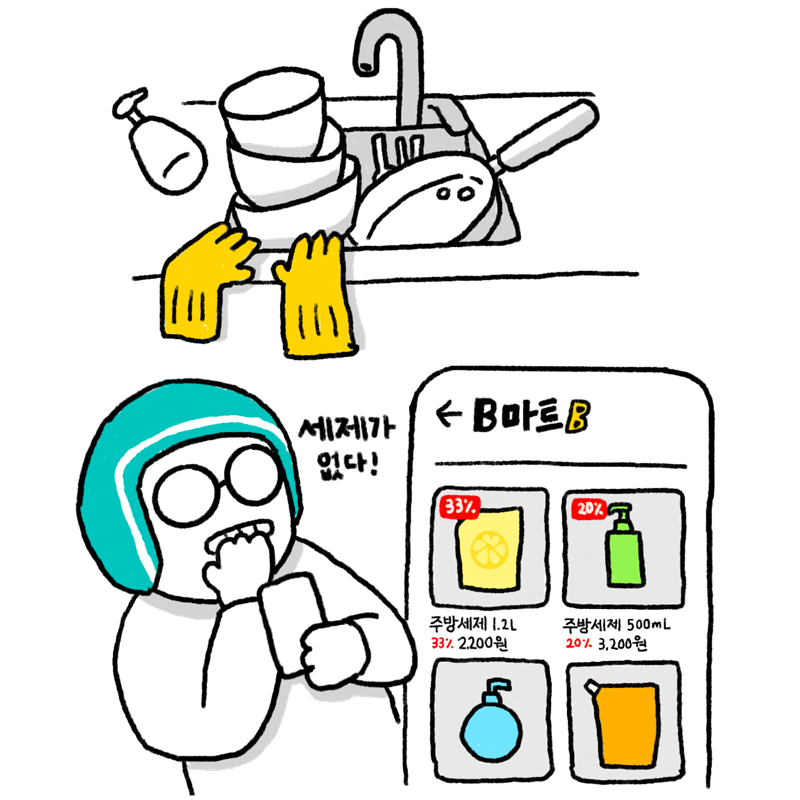
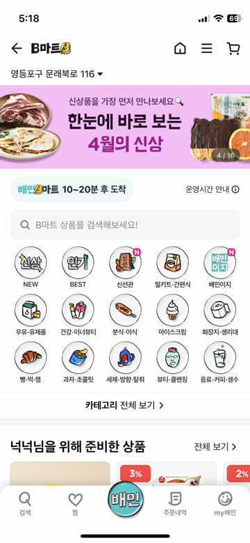
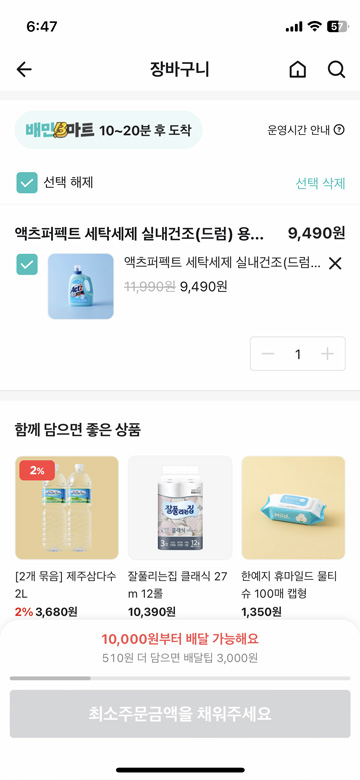
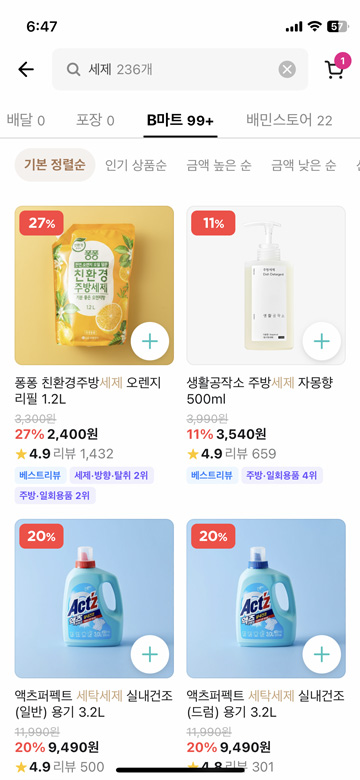

생활에 필요한 물건도 배달 받고 싶어!
B마트(비마트)는 생활에 필요한 물건 배달입니다. 음식 재료, 세제, 화장지 등 급하게 필요한 물건을 주문하고 배달 음식처럼 빠르게 받을 수 있습니다. 요리에 필요한 재료를 빠르게 배달 받고 싶을 때 세제, 화장지 등 생활용품이 급하게 필요할 때 과자, 음료수, 컵라면도 배달시켜 먹고 싶을 때
B마트 (B마트 아이콘)
이럴 때 사용해봐요!
B마트 이렇게 사용해보세요!

1
배달의민족 첫 화면에서 B마트(비마트)를 누른다.

2
‘검색’을 누르고 필요한 물건을 검색한다.

3
사고 싶은 물건을 선택해서 장바구니에 담는다. 음식을 주문하는 것과 똑같이 주문한다.